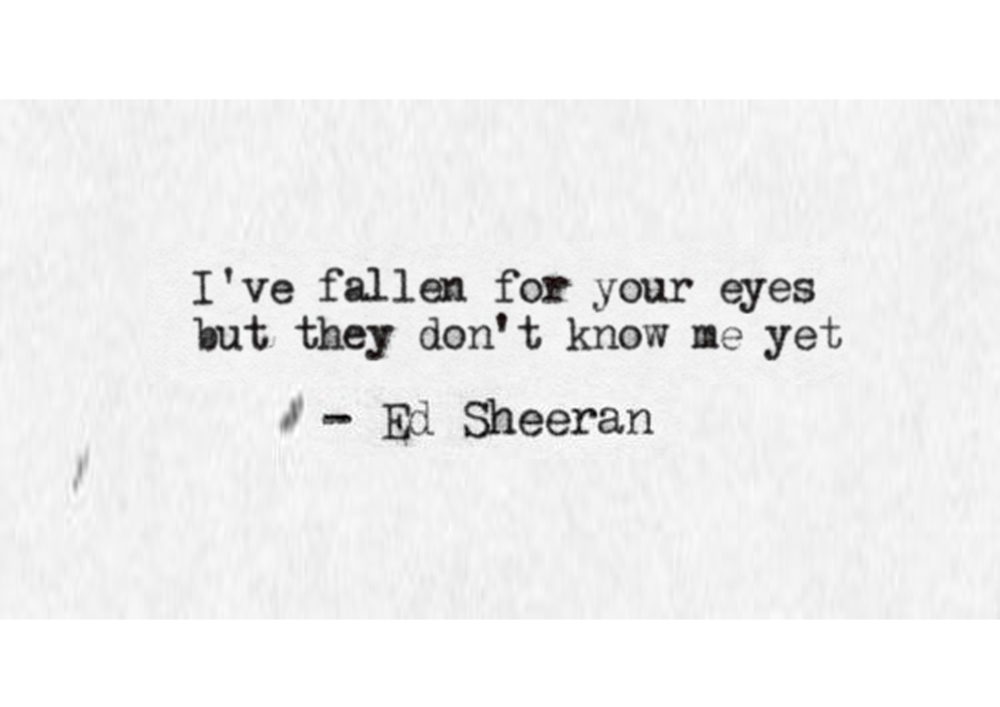

Quotes
-

-

When your legs don't work like they used to before And I can't sweep you off of your feet Will your mouth still remember the taste of my love Will your eyes still smile from your cheeks And darling I will be loving you till we're 70 And baby my heart could still fall as hard at 23 And I'm thinking 'bout how people fall in love in mysterious ways Maybe it's all part of a plan Oh me I fall in love with you every single day And I just wanna tell you I am So honey now Take me into your loving arms Kiss me under the light of a thousand stars Place your head on my beating heart I'm thinking out loud That maybe we found love right where we are When my hair's overgone and my memory fades And the crowds don't remember my name When my hands don't play the strings the same way I know you will still love me the same Cause honey your soul can never grow old It's ever green Baby your smile forever in my mind and memory And I'm thinking 'bout how people fall in love in mysterious ways Maybe just the touch of a hand While I continue making the same mistakes Hoping that you'll understand But baby now Take me into your loving arms Kiss me under the light of a thousand stars Place your head on my beating heart Thinking out loud That maybe we found love right where we are So baby now Take me into your loving arms Kiss me under the light of a thousand stars Oh darling, place your head on my beating heart I'm thinking out loud That maybe we found love right where we are Oh maybe we found love right where we are And we found love right where we are
Loving can hurt Loving can hurt sometimes But it's the only thing that I know When it gets hard You know it can get hard sometimes It is the only thing that makes us feel alive We keep this love in a photograph We made these memories for ourselves Where our eyes are never closing Hearts are never broken Times forever frozen still So you can keep me Inside the pocket Of your ripped jeans Holdin' me closer 'Til our eyes meet You won't ever be alone Wait for me to come home Loving can heal Loving can mend your soul And it's the only thing that I know (know) I swear it will get easier Remember that with every piece of ya And it's the only thing we take with us when we die We keep this love in this photograph We made these memories for ourselves Where our eyes are never closing Our hearts were never broken Times forever frozen still So you can keep me Inside the pocket Of your ripped jeans Holdin' me closer 'Til our eyes meet You won't ever be alone And if you hurt me That's OK, baby, only words bleed Inside these pages you just hold me And I won't ever let you go Wait for me to come home [4x] Oh you can fit me Inside the necklace you got when you were 16 Next to your heartbeat Where I should be Keep it deep within your soul And if you hurt me Well, that's OK, baby, only words bleed Inside these pages you just hold me And I won't ever let you go When I'm away I will remember how you kissed me Under the lamppost Back on 6th street Hearing you whisper through the phone, "Wait for me to come home."
You look so wonderful in your dress I love your hair like that The way it falls on the side of your neck Down your shoulders and back We are surrounded by all of these lies And people that talk too much You got the kind of look in your eyes As if no one knows anything but us Should this be the last thing I see I want you to know it’s enough for me Cos all that you are is all that I’ll ever need So in love You look so beautiful in this light You silhouette over me The way it brings out the blue in your eyes Is the Tenerife sea And all of the voices surrounding us here Just fade out when you take a breath Just say the word and I will disappear into the wilderness Should this be the last thing I see I want you to know it’s enough for me Cos all that you are is all that I’ll ever need So in love Lumiere darling, lumiere over me Should this be the last thing I see I want you to know it’s enough for me Cos all that you are Is all that I’ll ever need So in love You look so wonderful in your dress I love your hair like that And in a moment I knew you, Beth